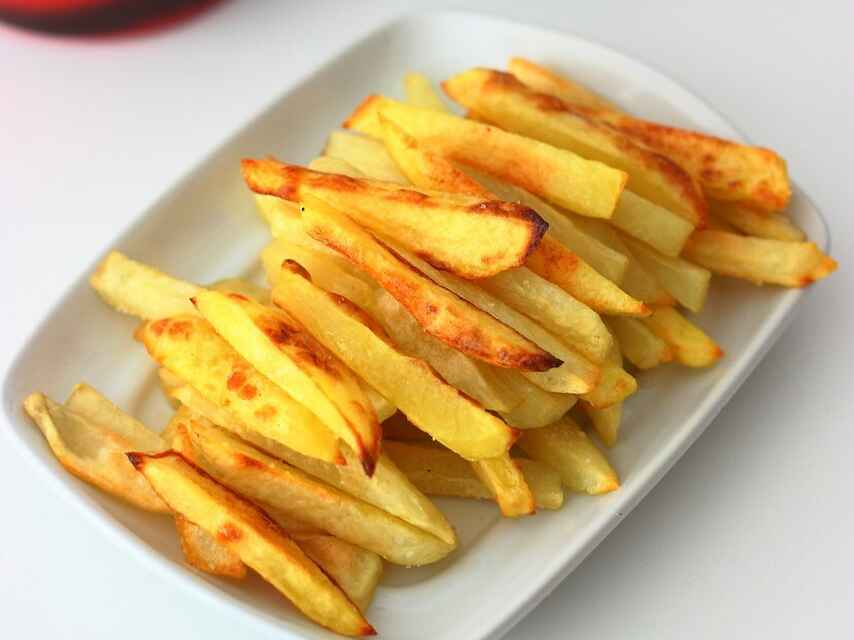

Patatas fritas
Receta de patatas fritas caseras

Ingredientes
3 o 4 patatas (300g)
4 dientes de ajo
Aceite de oliva
Sal
Elaboracion (Pasos)
1.Calentar aceite en sartén
Añadir patatas y ajos
Freir al gusto
Servir